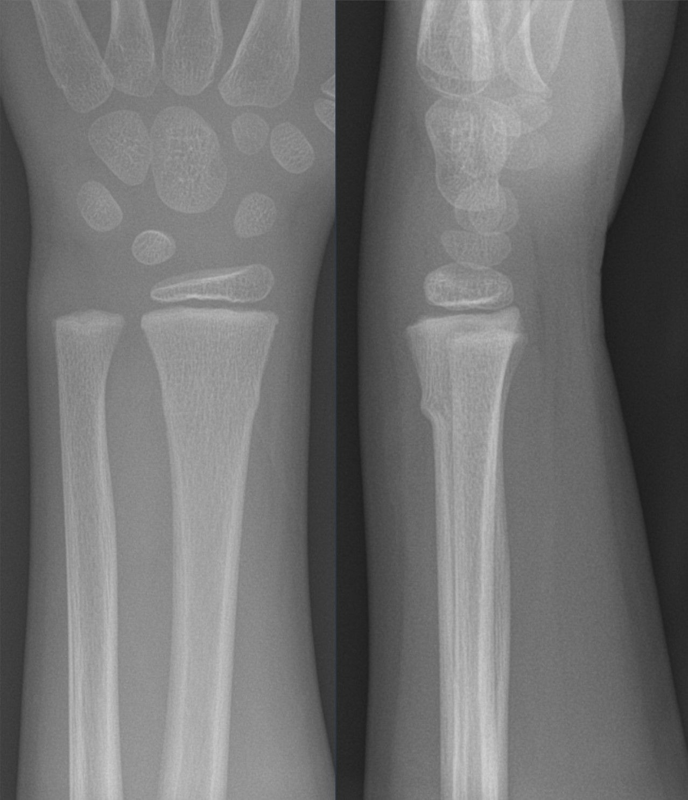
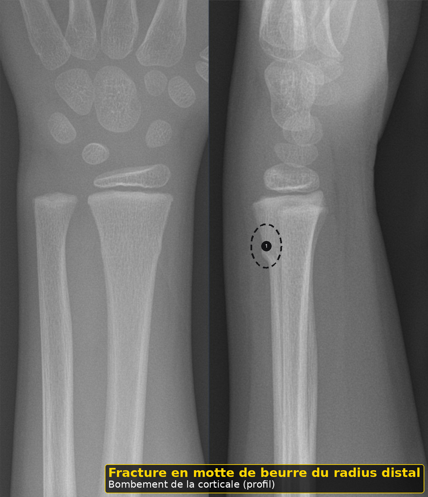

Lésion douloureuse locale du nourrisson
Taille : mesurée par le script du dépôt.
L'essentiel
Lésion douloureuse locale du nourrisson : les critères, les signes d'alarme et les doses lues sont dans les fenêtres.
1. Définition
Le détail est dans la fenêtre.
Une lésion douloureuse locale explique un cri inconsolable alors que l'enfant est par ailleurs sain.3
Le tourniquet de cheveu ou de fil serre un orteil, un doigt, le pénis ou le clitoris.3
Une abrasion de cornée, un corps étranger, une paronychie ou une brûlure de siège peuvent suffire.3
Ces lésions se voient seulement si l'on déshabille et si l'on éclaire.3
Elles ne sont pas un diagnostic d'élimination paresseux. Ce sont des trouvailles.3
À l'arrivée, pour Lésion douloureuse locale du nourrisson, on allume une lumière franche.
À l'arrivée, pour Lésion douloureuse locale du nourrisson, on vérifie l'hydratation si les selles sont liquides.
À l'arrivée, pour Lésion douloureuse locale du nourrisson, on palpe les os sans forcer.
Après le déshabillage, pour Lésion douloureuse locale du nourrisson, on demande un fil dans la chaussette.
Après le déshabillage, pour Lésion douloureuse locale du nourrisson, on revoit si la douleur reste.
Avant l'ordonnance, pour Lésion douloureuse locale du nourrisson, on ne ferme pas sur une poussée dentaire.
Avant l'ordonnance, pour Lésion douloureuse locale du nourrisson, on ne banalise pas un orteil noir.
Si le cri persiste, pour Lésion douloureuse locale du nourrisson, on ouvre les paupières.
Si le cri persiste, pour Lésion douloureuse locale du nourrisson, on explique la prévention des fils.
Avant le retour à domicile, pour Lésion douloureuse locale du nourrisson, on adresse si le lien est incomplet.
Avant le retour à domicile, pour Lésion douloureuse locale du nourrisson, on compare les deux pieds.
Quand la famille rappelle, pour Lésion douloureuse locale du nourrisson, on cherche un sillon.
Quand la famille rappelle, pour Lésion douloureuse locale du nourrisson, on radiographie un membre seulement si la mobilisation déclenche le cri et le récit est flou.
Dans le compte rendu, pour Lésion douloureuse locale du nourrisson, on compte dix doigts.
Dans le compte rendu, pour Lésion douloureuse locale du nourrisson, on peut utiliser 15 mg par kilogramme de paracétamol si la douleur le justifie.
Si un signe nouveau apparaît, pour Lésion douloureuse locale du nourrisson, on allume une lumière franche.
Si un signe nouveau apparaît, pour Lésion douloureuse locale du nourrisson, on vérifie l'hydratation si les selles sont liquides.
Si un signe nouveau apparaît, pour Lésion douloureuse locale du nourrisson, on palpe les os sans forcer.
À la visite de contrôle, pour Lésion douloureuse locale du nourrisson, on demande un fil dans la chaussette.
À la visite de contrôle, pour Lésion douloureuse locale du nourrisson, on revoit si la douleur reste.
Devant les deux parents, pour Lésion douloureuse locale du nourrisson, on ne ferme pas sur une poussée dentaire.
Devant les deux parents, pour Lésion douloureuse locale du nourrisson, on ne banalise pas un orteil noir.
Au moment de la pesée, pour Lésion douloureuse locale du nourrisson, on ouvre les paupières.
Au moment de la pesée, pour Lésion douloureuse locale du nourrisson, on explique la prévention des fils.
2. Épidémiologie
Le détail est dans la fenêtre.
Aucune incidence suisse du tourniquet n'est archivée dans ce LOT.3
Le mécanisme est assez classique pour être cherché à chaque examen de pleurs.3
L'otite et l'infection urinaire sont rangées avec l'infection, pas ici.3
La poussée dentaire ne ferme pas le dossier.3
Une fracture occulte entre dans la maltraitance si le récit ne tient pas, fichier voisin.3
À l'arrivée, pour Lésion douloureuse locale du nourrisson, on compte dix orteils.
À l'arrivée, pour Lésion douloureuse locale du nourrisson, on ne donne pas d'ibuprofène avant 6 mois.
À l'arrivée, pour Lésion douloureuse locale du nourrisson, on cherche un cheveu dans les plis.
Après le déshabillage, pour Lésion douloureuse locale du nourrisson, on regarde le siège à vif.
Après le déshabillage, pour Lésion douloureuse locale du nourrisson, on n'attribue pas le cri du soir à cette lésion si elle est absente.
Avant l'ordonnance, pour Lésion douloureuse locale du nourrisson, on dessine la lésion.
Avant l'ordonnance, pour Lésion douloureuse locale du nourrisson, on note l'heure de la levée du lien.
Si le cri persiste, pour Lésion douloureuse locale du nourrisson, on sépare abrasion et glaucome.
Si le cri persiste, pour Lésion douloureuse locale du nourrisson, on ne banalise pas un gland bleu.
Avant le retour à domicile, pour Lésion douloureuse locale du nourrisson, on recontrôle la couleur une heure après.
Avant le retour à domicile, pour Lésion douloureuse locale du nourrisson, on enlève body et chaussettes.
Quand la famille rappelle, pour Lésion douloureuse locale du nourrisson, on retire un lien vu, sans couper la peau.
Quand la famille rappelle, pour Lésion douloureuse locale du nourrisson, on ouvre le fichier maltraitance si plusieurs lésions ne collent pas.
Dans le compte rendu, pour Lésion douloureuse locale du nourrisson, on regarde le pénis et le clitoris.
Dans le compte rendu, pour Lésion douloureuse locale du nourrisson, on ne dose pas un collyre absent de l'information professionnelle.
Si un signe nouveau apparaît, pour Lésion douloureuse locale du nourrisson, on compte dix orteils.
Si un signe nouveau apparaît, pour Lésion douloureuse locale du nourrisson, on ne donne pas d'ibuprofène avant 6 mois.
Si un signe nouveau apparaît, pour Lésion douloureuse locale du nourrisson, on cherche un cheveu dans les plis.
À la visite de contrôle, pour Lésion douloureuse locale du nourrisson, on regarde le siège à vif.
À la visite de contrôle, pour Lésion douloureuse locale du nourrisson, on n'attribue pas le cri du soir à cette lésion si elle est absente.
Devant les deux parents, pour Lésion douloureuse locale du nourrisson, on dessine la lésion.
Devant les deux parents, pour Lésion douloureuse locale du nourrisson, on note l'heure de la levée du lien.
Au moment de la pesée, pour Lésion douloureuse locale du nourrisson, on sépare abrasion et glaucome.
Au moment de la pesée, pour Lésion douloureuse locale du nourrisson, on ne banalise pas un gland bleu.
3. Physiopathologie
Le détail est dans la fenêtre.
Un cheveu ou une fibre se resserre avec la sécheresse et bloque le retour veineux.3
L'orteil gonfle, rougit, puis peut nécroser.3
Le sillon est fin et se cache dans le pli.3
La cornée abrasée donne photophobie et cri à l'ouverture des yeux.3
La douleur cesse souvent dès que la cause est levée. C'est un indice, pas une preuve rétrospective.3
À l'arrivée, pour Lésion douloureuse locale du nourrisson, on compte dix doigts.
À l'arrivée, pour Lésion douloureuse locale du nourrisson, on peut utiliser 15 mg par kilogramme de paracétamol si la douleur le justifie.
Après le déshabillage, pour Lésion douloureuse locale du nourrisson, on allume une lumière franche.
Après le déshabillage, pour Lésion douloureuse locale du nourrisson, on vérifie l'hydratation si les selles sont liquides.
Après le déshabillage, pour Lésion douloureuse locale du nourrisson, on palpe les os sans forcer.
Avant l'ordonnance, pour Lésion douloureuse locale du nourrisson, on demande un fil dans la chaussette.
Avant l'ordonnance, pour Lésion douloureuse locale du nourrisson, on revoit si la douleur reste.
Si le cri persiste, pour Lésion douloureuse locale du nourrisson, on ne ferme pas sur une poussée dentaire.
Si le cri persiste, pour Lésion douloureuse locale du nourrisson, on ne banalise pas un orteil noir.
Avant le retour à domicile, pour Lésion douloureuse locale du nourrisson, on ouvre les paupières.
Avant le retour à domicile, pour Lésion douloureuse locale du nourrisson, on explique la prévention des fils.
Quand la famille rappelle, pour Lésion douloureuse locale du nourrisson, on adresse si le lien est incomplet.
Quand la famille rappelle, pour Lésion douloureuse locale du nourrisson, on compare les deux pieds.
Dans le compte rendu, pour Lésion douloureuse locale du nourrisson, on cherche un sillon.
Dans le compte rendu, pour Lésion douloureuse locale du nourrisson, on radiographie un membre seulement si la mobilisation déclenche le cri et le récit est flou.
Si un signe nouveau apparaît, pour Lésion douloureuse locale du nourrisson, on compte dix doigts.
Si un signe nouveau apparaît, pour Lésion douloureuse locale du nourrisson, on peut utiliser 15 mg par kilogramme de paracétamol si la douleur le justifie.
À la visite de contrôle, pour Lésion douloureuse locale du nourrisson, on allume une lumière franche.
À la visite de contrôle, pour Lésion douloureuse locale du nourrisson, on vérifie l'hydratation si les selles sont liquides.
À la visite de contrôle, pour Lésion douloureuse locale du nourrisson, on palpe les os sans forcer.
Devant les deux parents, pour Lésion douloureuse locale du nourrisson, on demande un fil dans la chaussette.
Devant les deux parents, pour Lésion douloureuse locale du nourrisson, on revoit si la douleur reste.
Au moment de la pesée, pour Lésion douloureuse locale du nourrisson, on ne ferme pas sur une poussée dentaire.
Au moment de la pesée, pour Lésion douloureuse locale du nourrisson, on ne banalise pas un orteil noir.
4. Démarche diagnostique
Le détail est dans la fenêtre.
On demande un fil, un cheveu, un bain récent, une griffure, un produit dans l'œil.3
On examine chaque orteil et chaque doigt, le pénis, le clitoris, le siège et les deux cornées.3
On compare les deux pieds.3
Si un sillon est vu, on coupe le lien avec un bon éclairage, sans entamer la peau.3
On adresse si le lien n'est pas entièrement vu ou si la couleur reste mauvaise.3
À l'arrivée, pour Lésion douloureuse locale du nourrisson, on regarde le pénis et le clitoris.
À l'arrivée, pour Lésion douloureuse locale du nourrisson, on ne dose pas un collyre absent de l'information professionnelle.
Après le déshabillage, pour Lésion douloureuse locale du nourrisson, on compte dix orteils.
Après le déshabillage, pour Lésion douloureuse locale du nourrisson, on ne donne pas d'ibuprofène avant 6 mois.
Après le déshabillage, pour Lésion douloureuse locale du nourrisson, on cherche un cheveu dans les plis.
Avant l'ordonnance, pour Lésion douloureuse locale du nourrisson, on regarde le siège à vif.
Avant l'ordonnance, pour Lésion douloureuse locale du nourrisson, on n'attribue pas le cri du soir à cette lésion si elle est absente.
Si le cri persiste, pour Lésion douloureuse locale du nourrisson, on dessine la lésion.
Si le cri persiste, pour Lésion douloureuse locale du nourrisson, on note l'heure de la levée du lien.
Avant le retour à domicile, pour Lésion douloureuse locale du nourrisson, on sépare abrasion et glaucome.
Avant le retour à domicile, pour Lésion douloureuse locale du nourrisson, on ne banalise pas un gland bleu.
Quand la famille rappelle, pour Lésion douloureuse locale du nourrisson, on recontrôle la couleur une heure après.
Quand la famille rappelle, pour Lésion douloureuse locale du nourrisson, on enlève body et chaussettes.
Dans le compte rendu, pour Lésion douloureuse locale du nourrisson, on retire un lien vu, sans couper la peau.
Dans le compte rendu, pour Lésion douloureuse locale du nourrisson, on ouvre le fichier maltraitance si plusieurs lésions ne collent pas.
Si un signe nouveau apparaît, pour Lésion douloureuse locale du nourrisson, on regarde le pénis et le clitoris.
Si un signe nouveau apparaît, pour Lésion douloureuse locale du nourrisson, on ne dose pas un collyre absent de l'information professionnelle.
À la visite de contrôle, pour Lésion douloureuse locale du nourrisson, on compte dix orteils.
À la visite de contrôle, pour Lésion douloureuse locale du nourrisson, on ne donne pas d'ibuprofène avant 6 mois.
À la visite de contrôle, pour Lésion douloureuse locale du nourrisson, on cherche un cheveu dans les plis.
Devant les deux parents, pour Lésion douloureuse locale du nourrisson, on regarde le siège à vif.
Devant les deux parents, pour Lésion douloureuse locale du nourrisson, on n'attribue pas le cri du soir à cette lésion si elle est absente.
Au moment de la pesée, pour Lésion douloureuse locale du nourrisson, on dessine la lésion.
Au moment de la pesée, pour Lésion douloureuse locale du nourrisson, on note l'heure de la levée du lien.
5. Anamnèse et drapeaux rouges
Le détail est dans la fenêtre.
Un orteil noir ou un gland bleu est une urgence locale.15
Une cornée trouble avec un grand œil n'est pas une simple abrasion. C'est le fichier du glaucome.15
De la fièvre avec une paronychie peut demander un drainage, pas un conseil de colique.15
Des ecchymoses ailleurs font ouvrir le fichier maltraitance.15
On ne sectionne pas à l'aveugle.15
À l'arrivée, pour Lésion douloureuse locale du nourrisson, on cherche un sillon.
À l'arrivée, pour Lésion douloureuse locale du nourrisson, on radiographie un membre seulement si la mobilisation déclenche le cri et le récit est flou.
Après le déshabillage, pour Lésion douloureuse locale du nourrisson, on compte dix doigts.
Après le déshabillage, pour Lésion douloureuse locale du nourrisson, on peut utiliser 15 mg par kilogramme de paracétamol si la douleur le justifie.
Avant l'ordonnance, pour Lésion douloureuse locale du nourrisson, on allume une lumière franche.
Avant l'ordonnance, pour Lésion douloureuse locale du nourrisson, on vérifie l'hydratation si les selles sont liquides.
Avant l'ordonnance, pour Lésion douloureuse locale du nourrisson, on palpe les os sans forcer.
Si le cri persiste, pour Lésion douloureuse locale du nourrisson, on demande un fil dans la chaussette.
Si le cri persiste, pour Lésion douloureuse locale du nourrisson, on revoit si la douleur reste.
Avant le retour à domicile, pour Lésion douloureuse locale du nourrisson, on ne ferme pas sur une poussée dentaire.
Avant le retour à domicile, pour Lésion douloureuse locale du nourrisson, on ne banalise pas un orteil noir.
Quand la famille rappelle, pour Lésion douloureuse locale du nourrisson, on ouvre les paupières.
Quand la famille rappelle, pour Lésion douloureuse locale du nourrisson, on explique la prévention des fils.
Dans le compte rendu, pour Lésion douloureuse locale du nourrisson, on adresse si le lien est incomplet.
Dans le compte rendu, pour Lésion douloureuse locale du nourrisson, on compare les deux pieds.
Si un signe nouveau apparaît, pour Lésion douloureuse locale du nourrisson, on cherche un sillon.
Si un signe nouveau apparaît, pour Lésion douloureuse locale du nourrisson, on radiographie un membre seulement si la mobilisation déclenche le cri et le récit est flou.
À la visite de contrôle, pour Lésion douloureuse locale du nourrisson, on compte dix doigts.
À la visite de contrôle, pour Lésion douloureuse locale du nourrisson, on peut utiliser 15 mg par kilogramme de paracétamol si la douleur le justifie.
Devant les deux parents, pour Lésion douloureuse locale du nourrisson, on allume une lumière franche.
Devant les deux parents, pour Lésion douloureuse locale du nourrisson, on vérifie l'hydratation si les selles sont liquides.
Devant les deux parents, pour Lésion douloureuse locale du nourrisson, on palpe les os sans forcer.
Au moment de la pesée, pour Lésion douloureuse locale du nourrisson, on demande un fil dans la chaussette.
Au moment de la pesée, pour Lésion douloureuse locale du nourrisson, on revoit si la douleur reste.
6. Examen physique
Le détail est dans la fenêtre.
Lumière franche, doigts écartés, couche ôtée.3
On retourne les paupières si l'histoire parle d'un œil.3
La fluorescéine, si elle est disponible et non contre-indiquée, objective une abrasion. Ce LOT ne donne pas une dose de collyre absente de l'information professionnelle lue.3
On palpe les os longs sans forcer si le cri survient à la mobilisation.3
On regarde le siège : une peau à vif suffit à faire mal.3
À l'arrivée, pour Lésion douloureuse locale du nourrisson, on retire un lien vu, sans couper la peau.
À l'arrivée, pour Lésion douloureuse locale du nourrisson, on ouvre le fichier maltraitance si plusieurs lésions ne collent pas.
Après le déshabillage, pour Lésion douloureuse locale du nourrisson, on regarde le pénis et le clitoris.
Après le déshabillage, pour Lésion douloureuse locale du nourrisson, on ne dose pas un collyre absent de l'information professionnelle.
Avant l'ordonnance, pour Lésion douloureuse locale du nourrisson, on compte dix orteils.
Avant l'ordonnance, pour Lésion douloureuse locale du nourrisson, on ne donne pas d'ibuprofène avant 6 mois.
Avant l'ordonnance, pour Lésion douloureuse locale du nourrisson, on cherche un cheveu dans les plis.
Si le cri persiste, pour Lésion douloureuse locale du nourrisson, on regarde le siège à vif.
Si le cri persiste, pour Lésion douloureuse locale du nourrisson, on n'attribue pas le cri du soir à cette lésion si elle est absente.
Avant le retour à domicile, pour Lésion douloureuse locale du nourrisson, on dessine la lésion.
Avant le retour à domicile, pour Lésion douloureuse locale du nourrisson, on note l'heure de la levée du lien.
Quand la famille rappelle, pour Lésion douloureuse locale du nourrisson, on sépare abrasion et glaucome.
Quand la famille rappelle, pour Lésion douloureuse locale du nourrisson, on ne banalise pas un gland bleu.
Dans le compte rendu, pour Lésion douloureuse locale du nourrisson, on recontrôle la couleur une heure après.
Dans le compte rendu, pour Lésion douloureuse locale du nourrisson, on enlève body et chaussettes.
Si un signe nouveau apparaît, pour Lésion douloureuse locale du nourrisson, on retire un lien vu, sans couper la peau.
Si un signe nouveau apparaît, pour Lésion douloureuse locale du nourrisson, on ouvre le fichier maltraitance si plusieurs lésions ne collent pas.
À la visite de contrôle, pour Lésion douloureuse locale du nourrisson, on regarde le pénis et le clitoris.
À la visite de contrôle, pour Lésion douloureuse locale du nourrisson, on ne dose pas un collyre absent de l'information professionnelle.
Devant les deux parents, pour Lésion douloureuse locale du nourrisson, on compte dix orteils.
Devant les deux parents, pour Lésion douloureuse locale du nourrisson, on ne donne pas d'ibuprofène avant 6 mois.
Devant les deux parents, pour Lésion douloureuse locale du nourrisson, on cherche un cheveu dans les plis.
Au moment de la pesée, pour Lésion douloureuse locale du nourrisson, on regarde le siège à vif.
Au moment de la pesée, pour Lésion douloureuse locale du nourrisson, on n'attribue pas le cri du soir à cette lésion si elle est absente.
7. Approche syndromique
Le détail est dans la fenêtre.
Un seul orteil anormal et le reste de l'examen calme : lésion locale.15
Œil rouge plus photophobie plus cornée normale : abrasion ou corps étranger.15
Œil grand et trouble : glaucome, pas corps étranger.15
Siège à vif plus diarrhée : irritation, et l'on vérifie l'hydratation.15
Plusieurs sites traumatiques : maltraitance jusqu'à évaluation.15
À l'arrivée, pour Lésion douloureuse locale du nourrisson, on adresse si le lien est incomplet.
À l'arrivée, pour Lésion douloureuse locale du nourrisson, on compare les deux pieds.
Après le déshabillage, pour Lésion douloureuse locale du nourrisson, on cherche un sillon.
Après le déshabillage, pour Lésion douloureuse locale du nourrisson, on radiographie un membre seulement si la mobilisation déclenche le cri et le récit est flou.
Avant l'ordonnance, pour Lésion douloureuse locale du nourrisson, on compte dix doigts.
Avant l'ordonnance, pour Lésion douloureuse locale du nourrisson, on peut utiliser 15 mg par kilogramme de paracétamol si la douleur le justifie.
Si le cri persiste, pour Lésion douloureuse locale du nourrisson, on allume une lumière franche.
Si le cri persiste, pour Lésion douloureuse locale du nourrisson, on vérifie l'hydratation si les selles sont liquides.
Si le cri persiste, pour Lésion douloureuse locale du nourrisson, on palpe les os sans forcer.
Avant le retour à domicile, pour Lésion douloureuse locale du nourrisson, on demande un fil dans la chaussette.
Avant le retour à domicile, pour Lésion douloureuse locale du nourrisson, on revoit si la douleur reste.
Quand la famille rappelle, pour Lésion douloureuse locale du nourrisson, on ne ferme pas sur une poussée dentaire.
Quand la famille rappelle, pour Lésion douloureuse locale du nourrisson, on ne banalise pas un orteil noir.
Dans le compte rendu, pour Lésion douloureuse locale du nourrisson, on ouvre les paupières.
Dans le compte rendu, pour Lésion douloureuse locale du nourrisson, on explique la prévention des fils.
Si un signe nouveau apparaît, pour Lésion douloureuse locale du nourrisson, on adresse si le lien est incomplet.
Si un signe nouveau apparaît, pour Lésion douloureuse locale du nourrisson, on compare les deux pieds.
À la visite de contrôle, pour Lésion douloureuse locale du nourrisson, on cherche un sillon.
À la visite de contrôle, pour Lésion douloureuse locale du nourrisson, on radiographie un membre seulement si la mobilisation déclenche le cri et le récit est flou.
Devant les deux parents, pour Lésion douloureuse locale du nourrisson, on compte dix doigts.
Devant les deux parents, pour Lésion douloureuse locale du nourrisson, on peut utiliser 15 mg par kilogramme de paracétamol si la douleur le justifie.
Au moment de la pesée, pour Lésion douloureuse locale du nourrisson, on allume une lumière franche.
Au moment de la pesée, pour Lésion douloureuse locale du nourrisson, on vérifie l'hydratation si les selles sont liquides.
8. Diagnostic positif
Le détail est dans la fenêtre.
Le diagnostic positif est la lésion vue.3
On la photographie ou on la dessine dans le dossier, avec l'heure.3
On écrit ce qui a été retiré.3
On ne nomme pas un tourniquet sans avoir vu le sillon ou le lien.3
La disparition du cri après soin conforte, elle ne remplace pas la description.3
À l'arrivée, pour Lésion douloureuse locale du nourrisson, on recontrôle la couleur une heure après.
À l'arrivée, pour Lésion douloureuse locale du nourrisson, on enlève body et chaussettes.
Après le déshabillage, pour Lésion douloureuse locale du nourrisson, on retire un lien vu, sans couper la peau.
Après le déshabillage, pour Lésion douloureuse locale du nourrisson, on ouvre le fichier maltraitance si plusieurs lésions ne collent pas.
Avant l'ordonnance, pour Lésion douloureuse locale du nourrisson, on regarde le pénis et le clitoris.
Avant l'ordonnance, pour Lésion douloureuse locale du nourrisson, on ne dose pas un collyre absent de l'information professionnelle.
Si le cri persiste, pour Lésion douloureuse locale du nourrisson, on compte dix orteils.
Si le cri persiste, pour Lésion douloureuse locale du nourrisson, on ne donne pas d'ibuprofène avant 6 mois.
Si le cri persiste, pour Lésion douloureuse locale du nourrisson, on cherche un cheveu dans les plis.
Avant le retour à domicile, pour Lésion douloureuse locale du nourrisson, on regarde le siège à vif.
Avant le retour à domicile, pour Lésion douloureuse locale du nourrisson, on n'attribue pas le cri du soir à cette lésion si elle est absente.
Quand la famille rappelle, pour Lésion douloureuse locale du nourrisson, on dessine la lésion.
Quand la famille rappelle, pour Lésion douloureuse locale du nourrisson, on note l'heure de la levée du lien.
Dans le compte rendu, pour Lésion douloureuse locale du nourrisson, on sépare abrasion et glaucome.
Dans le compte rendu, pour Lésion douloureuse locale du nourrisson, on ne banalise pas un gland bleu.
Si un signe nouveau apparaît, pour Lésion douloureuse locale du nourrisson, on recontrôle la couleur une heure après.
Si un signe nouveau apparaît, pour Lésion douloureuse locale du nourrisson, on enlève body et chaussettes.
À la visite de contrôle, pour Lésion douloureuse locale du nourrisson, on retire un lien vu, sans couper la peau.
À la visite de contrôle, pour Lésion douloureuse locale du nourrisson, on ouvre le fichier maltraitance si plusieurs lésions ne collent pas.
Devant les deux parents, pour Lésion douloureuse locale du nourrisson, on regarde le pénis et le clitoris.
Devant les deux parents, pour Lésion douloureuse locale du nourrisson, on ne dose pas un collyre absent de l'information professionnelle.
Au moment de la pesée, pour Lésion douloureuse locale du nourrisson, on compte dix orteils.
Au moment de la pesée, pour Lésion douloureuse locale du nourrisson, on ne donne pas d'ibuprofène avant 6 mois.
9. Examens complémentaires
Le détail est dans la fenêtre.
Aucun bilan sanguin n'est utile pour un fil vu et retiré, si le reste est normal.3
Une se discute si la mobilisation d'un membre déclenche le cri et que le récit est flou.3


Reconnaître. Fracture en motte de beurre (torus) : la corticale bombe au lieu d'être droite, sur le profil. Fracture fréquente de l'enfant, sans trait net.
Radiographie du poignet, face et profil, enfant de 6 ans : fracture en motte de beurre du radius distal.
Pièges. Le trait de fracture peut manquer : regarder le contour de la corticale sur les deux incidences. Chez le nourrisson qui crie à la mobilisation, une fracture inexpliquée fait discuter une maltraitance.
Image : Hellerhoff — Creative Commons Attribution – Partage dans les mêmes conditions 4.0 — Wikimedia Commons, consulté le 2026-11-01. Version annotée (pointillés, numéros, cartouche) : œuvre dérivée sous la même licence.

Un avis ophtalmologique part tôt si l'œil reste fermé.3
On ne demande pas une échographie abdominale pour un orteil bleu.3
On contrôle la couleur une heure après le retrait.3
À l'arrivée, pour Lésion douloureuse locale du nourrisson, on ouvre les paupières.
À l'arrivée, pour Lésion douloureuse locale du nourrisson, on explique la prévention des fils.
Après le déshabillage, pour Lésion douloureuse locale du nourrisson, on adresse si le lien est incomplet.
Après le déshabillage, pour Lésion douloureuse locale du nourrisson, on compare les deux pieds.
Avant l'ordonnance, pour Lésion douloureuse locale du nourrisson, on cherche un sillon.
Avant l'ordonnance, pour Lésion douloureuse locale du nourrisson, on radiographie un membre seulement si la mobilisation déclenche le cri et le récit est flou.
Si le cri persiste, pour Lésion douloureuse locale du nourrisson, on compte dix doigts.
Si le cri persiste, pour Lésion douloureuse locale du nourrisson, on peut utiliser 15 mg par kilogramme de paracétamol si la douleur le justifie.
Avant le retour à domicile, pour Lésion douloureuse locale du nourrisson, on allume une lumière franche.
Avant le retour à domicile, pour Lésion douloureuse locale du nourrisson, on vérifie l'hydratation si les selles sont liquides.
Avant le retour à domicile, pour Lésion douloureuse locale du nourrisson, on palpe les os sans forcer.
Quand la famille rappelle, pour Lésion douloureuse locale du nourrisson, on demande un fil dans la chaussette.
Quand la famille rappelle, pour Lésion douloureuse locale du nourrisson, on revoit si la douleur reste.
Dans le compte rendu, pour Lésion douloureuse locale du nourrisson, on ne ferme pas sur une poussée dentaire.
Dans le compte rendu, pour Lésion douloureuse locale du nourrisson, on ne banalise pas un orteil noir.
Si un signe nouveau apparaît, pour Lésion douloureuse locale du nourrisson, on ouvre les paupières.
Si un signe nouveau apparaît, pour Lésion douloureuse locale du nourrisson, on explique la prévention des fils.
À la visite de contrôle, pour Lésion douloureuse locale du nourrisson, on adresse si le lien est incomplet.
À la visite de contrôle, pour Lésion douloureuse locale du nourrisson, on compare les deux pieds.
Devant les deux parents, pour Lésion douloureuse locale du nourrisson, on cherche un sillon.
Devant les deux parents, pour Lésion douloureuse locale du nourrisson, on radiographie un membre seulement si la mobilisation déclenche le cri et le récit est flou.
Au moment de la pesée, pour Lésion douloureuse locale du nourrisson, on compte dix doigts.
Au moment de la pesée, pour Lésion douloureuse locale du nourrisson, on peut utiliser 15 mg par kilogramme de paracétamol si la douleur le justifie.
10. Arbre décisionnel
Le détail est dans la fenêtre.
Schéma interactif
Le schéma parcourt le corps de la tête aux orteils.3
Premier panneau : yeux et bouche.3
Deuxième panneau : doigts, orteils, organes génitaux.3
Troisième panneau : ce qui doit être adressé.3
On coche seulement ce qui a été vu.3
À l'arrivée, pour Lésion douloureuse locale du nourrisson, on sépare abrasion et glaucome.
À l'arrivée, pour Lésion douloureuse locale du nourrisson, on ne banalise pas un gland bleu.
Après le déshabillage, pour Lésion douloureuse locale du nourrisson, on recontrôle la couleur une heure après.
Après le déshabillage, pour Lésion douloureuse locale du nourrisson, on enlève body et chaussettes.
Avant l'ordonnance, pour Lésion douloureuse locale du nourrisson, on retire un lien vu, sans couper la peau.
Avant l'ordonnance, pour Lésion douloureuse locale du nourrisson, on ouvre le fichier maltraitance si plusieurs lésions ne collent pas.
Si le cri persiste, pour Lésion douloureuse locale du nourrisson, on regarde le pénis et le clitoris.
Si le cri persiste, pour Lésion douloureuse locale du nourrisson, on ne dose pas un collyre absent de l'information professionnelle.
Avant le retour à domicile, pour Lésion douloureuse locale du nourrisson, on compte dix orteils.
Avant le retour à domicile, pour Lésion douloureuse locale du nourrisson, on ne donne pas d'ibuprofène avant 6 mois.
Avant le retour à domicile, pour Lésion douloureuse locale du nourrisson, on cherche un cheveu dans les plis.
Quand la famille rappelle, pour Lésion douloureuse locale du nourrisson, on regarde le siège à vif.
Quand la famille rappelle, pour Lésion douloureuse locale du nourrisson, on n'attribue pas le cri du soir à cette lésion si elle est absente.
Dans le compte rendu, pour Lésion douloureuse locale du nourrisson, on dessine la lésion.
Dans le compte rendu, pour Lésion douloureuse locale du nourrisson, on note l'heure de la levée du lien.
Si un signe nouveau apparaît, pour Lésion douloureuse locale du nourrisson, on sépare abrasion et glaucome.
Si un signe nouveau apparaît, pour Lésion douloureuse locale du nourrisson, on ne banalise pas un gland bleu.
À la visite de contrôle, pour Lésion douloureuse locale du nourrisson, on recontrôle la couleur une heure après.
À la visite de contrôle, pour Lésion douloureuse locale du nourrisson, on enlève body et chaussettes.
Devant les deux parents, pour Lésion douloureuse locale du nourrisson, on retire un lien vu, sans couper la peau.
Devant les deux parents, pour Lésion douloureuse locale du nourrisson, on ouvre le fichier maltraitance si plusieurs lésions ne collent pas.
Au moment de la pesée, pour Lésion douloureuse locale du nourrisson, on regarde le pénis et le clitoris.
Au moment de la pesée, pour Lésion douloureuse locale du nourrisson, on ne dose pas un collyre absent de l'information professionnelle.
11. Prise en charge
Le détail est dans la fenêtre.
On retire le lien, on surélève, on réévalue la couleur.11
Une analgésie ponctuelle suit Dafalgan enfant, autorisation 43838, à 15 mg par kilogramme si la douleur le justifie.11
On n'utilise pas Algifor Dolo Junior avant 6 mois.11
Le siège se lave et se protège. Aucune crème n'est dosée ici sans information professionnelle ouverte.11
On explique de vérifier les chaussettes et les poignets de body.11
À l'arrivée, pour Lésion douloureuse locale du nourrisson, on ne ferme pas sur une poussée dentaire.
À l'arrivée, pour Lésion douloureuse locale du nourrisson, on ne banalise pas un orteil noir.
Après le déshabillage, pour Lésion douloureuse locale du nourrisson, on ouvre les paupières.
Après le déshabillage, pour Lésion douloureuse locale du nourrisson, on explique la prévention des fils.
Avant l'ordonnance, pour Lésion douloureuse locale du nourrisson, on adresse si le lien est incomplet.
Avant l'ordonnance, pour Lésion douloureuse locale du nourrisson, on compare les deux pieds.
Si le cri persiste, pour Lésion douloureuse locale du nourrisson, on cherche un sillon.
Si le cri persiste, pour Lésion douloureuse locale du nourrisson, on radiographie un membre seulement si la mobilisation déclenche le cri et le récit est flou.
Avant le retour à domicile, pour Lésion douloureuse locale du nourrisson, on compte dix doigts.
Avant le retour à domicile, pour Lésion douloureuse locale du nourrisson, on peut utiliser 15 mg par kilogramme de paracétamol si la douleur le justifie.
Quand la famille rappelle, pour Lésion douloureuse locale du nourrisson, on allume une lumière franche.
Quand la famille rappelle, pour Lésion douloureuse locale du nourrisson, on vérifie l'hydratation si les selles sont liquides.
Quand la famille rappelle, pour Lésion douloureuse locale du nourrisson, on palpe les os sans forcer.
Dans le compte rendu, pour Lésion douloureuse locale du nourrisson, on demande un fil dans la chaussette.
Dans le compte rendu, pour Lésion douloureuse locale du nourrisson, on revoit si la douleur reste.
Si un signe nouveau apparaît, pour Lésion douloureuse locale du nourrisson, on ne ferme pas sur une poussée dentaire.
Si un signe nouveau apparaît, pour Lésion douloureuse locale du nourrisson, on ne banalise pas un orteil noir.
À la visite de contrôle, pour Lésion douloureuse locale du nourrisson, on ouvre les paupières.
À la visite de contrôle, pour Lésion douloureuse locale du nourrisson, on explique la prévention des fils.
Devant les deux parents, pour Lésion douloureuse locale du nourrisson, on adresse si le lien est incomplet.
Devant les deux parents, pour Lésion douloureuse locale du nourrisson, on compare les deux pieds.
Au moment de la pesée, pour Lésion douloureuse locale du nourrisson, on cherche un sillon.
Au moment de la pesée, pour Lésion douloureuse locale du nourrisson, on radiographie un membre seulement si la mobilisation déclenche le cri et le récit est flou.
12. Prévention
Le détail est dans la fenêtre.
On retourne les chaussettes et on évite les fils libres.3
On ne laisse pas un cheveu long autour des doigts du bébé.3
On protège les yeux du vent et des ongles.3
On revoit un orteil encore violacé.3
On apprend le signe : un seul doigt gonflé.3
À l'arrivée, pour Lésion douloureuse locale du nourrisson, on dessine la lésion.
À l'arrivée, pour Lésion douloureuse locale du nourrisson, on note l'heure de la levée du lien.
Après le déshabillage, pour Lésion douloureuse locale du nourrisson, on sépare abrasion et glaucome.
Après le déshabillage, pour Lésion douloureuse locale du nourrisson, on ne banalise pas un gland bleu.
Avant l'ordonnance, pour Lésion douloureuse locale du nourrisson, on recontrôle la couleur une heure après.
Avant l'ordonnance, pour Lésion douloureuse locale du nourrisson, on enlève body et chaussettes.
Si le cri persiste, pour Lésion douloureuse locale du nourrisson, on retire un lien vu, sans couper la peau.
Si le cri persiste, pour Lésion douloureuse locale du nourrisson, on ouvre le fichier maltraitance si plusieurs lésions ne collent pas.
Avant le retour à domicile, pour Lésion douloureuse locale du nourrisson, on regarde le pénis et le clitoris.
Avant le retour à domicile, pour Lésion douloureuse locale du nourrisson, on ne dose pas un collyre absent de l'information professionnelle.
Quand la famille rappelle, pour Lésion douloureuse locale du nourrisson, on compte dix orteils.
Quand la famille rappelle, pour Lésion douloureuse locale du nourrisson, on ne donne pas d'ibuprofène avant 6 mois.
Quand la famille rappelle, pour Lésion douloureuse locale du nourrisson, on cherche un cheveu dans les plis.
Dans le compte rendu, pour Lésion douloureuse locale du nourrisson, on regarde le siège à vif.
Dans le compte rendu, pour Lésion douloureuse locale du nourrisson, on n'attribue pas le cri du soir à cette lésion si elle est absente.
Si un signe nouveau apparaît, pour Lésion douloureuse locale du nourrisson, on dessine la lésion.
Si un signe nouveau apparaît, pour Lésion douloureuse locale du nourrisson, on note l'heure de la levée du lien.
À la visite de contrôle, pour Lésion douloureuse locale du nourrisson, on sépare abrasion et glaucome.
À la visite de contrôle, pour Lésion douloureuse locale du nourrisson, on ne banalise pas un gland bleu.
Devant les deux parents, pour Lésion douloureuse locale du nourrisson, on recontrôle la couleur une heure après.
Devant les deux parents, pour Lésion douloureuse locale du nourrisson, on enlève body et chaussettes.
Au moment de la pesée, pour Lésion douloureuse locale du nourrisson, on retire un lien vu, sans couper la peau.
Au moment de la pesée, pour Lésion douloureuse locale du nourrisson, on ouvre le fichier maltraitance si plusieurs lésions ne collent pas.
13. Points clés
Le détail est dans la fenêtre.
Déshabiller est le test.3
Un sillon fin se cherche avec une lumière.3
Œil grand et trouble n'est pas une abrasion.3
La poussée dentaire ne clôt rien.3
Photographier ou dessiner la lésion.3
À l'arrivée, pour Lésion douloureuse locale du nourrisson, on demande un fil dans la chaussette.
À l'arrivée, pour Lésion douloureuse locale du nourrisson, on revoit si la douleur reste.
Après le déshabillage, pour Lésion douloureuse locale du nourrisson, on ne ferme pas sur une poussée dentaire.
Après le déshabillage, pour Lésion douloureuse locale du nourrisson, on ne banalise pas un orteil noir.
Avant l'ordonnance, pour Lésion douloureuse locale du nourrisson, on ouvre les paupières.
Avant l'ordonnance, pour Lésion douloureuse locale du nourrisson, on explique la prévention des fils.
Si le cri persiste, pour Lésion douloureuse locale du nourrisson, on adresse si le lien est incomplet.
Si le cri persiste, pour Lésion douloureuse locale du nourrisson, on compare les deux pieds.
Avant le retour à domicile, pour Lésion douloureuse locale du nourrisson, on cherche un sillon.
Avant le retour à domicile, pour Lésion douloureuse locale du nourrisson, on radiographie un membre seulement si la mobilisation déclenche le cri et le récit est flou.
Quand la famille rappelle, pour Lésion douloureuse locale du nourrisson, on compte dix doigts.
Quand la famille rappelle, pour Lésion douloureuse locale du nourrisson, on peut utiliser 15 mg par kilogramme de paracétamol si la douleur le justifie.
Dans le compte rendu, pour Lésion douloureuse locale du nourrisson, on allume une lumière franche.
Dans le compte rendu, pour Lésion douloureuse locale du nourrisson, on vérifie l'hydratation si les selles sont liquides.
Dans le compte rendu, pour Lésion douloureuse locale du nourrisson, on palpe les os sans forcer.
Si un signe nouveau apparaît, pour Lésion douloureuse locale du nourrisson, on demande un fil dans la chaussette.
Si un signe nouveau apparaît, pour Lésion douloureuse locale du nourrisson, on revoit si la douleur reste.
À la visite de contrôle, pour Lésion douloureuse locale du nourrisson, on ne ferme pas sur une poussée dentaire.
À la visite de contrôle, pour Lésion douloureuse locale du nourrisson, on ne banalise pas un orteil noir.
Devant les deux parents, pour Lésion douloureuse locale du nourrisson, on ouvre les paupières.
Devant les deux parents, pour Lésion douloureuse locale du nourrisson, on explique la prévention des fils.
Au moment de la pesée, pour Lésion douloureuse locale du nourrisson, on adresse si le lien est incomplet.
Au moment de la pesée, pour Lésion douloureuse locale du nourrisson, on compare les deux pieds.
14. Pièges et cas
Le détail est dans la fenêtre.
Piège : examiner l'enfant habillé.3
Piège : appeler piqûre d'insecte un sillon circulaire.3
Piège : oublier le clitoris et le pénis.3
Cas corrigé. À 4 semaines, cri depuis deux heures, examen du ventre normal. Le quatrième orteil est violet avec un sillon.3
On retire le cheveu, la couleur revient, le cri tombe.3
On ne prescrit pas un hydrolysat pour cet épisode.3
À l'arrivée, pour Lésion douloureuse locale du nourrisson, on regarde le siège à vif.
À l'arrivée, pour Lésion douloureuse locale du nourrisson, on n'attribue pas le cri du soir à cette lésion si elle est absente.
Après le déshabillage, pour Lésion douloureuse locale du nourrisson, on dessine la lésion.
Après le déshabillage, pour Lésion douloureuse locale du nourrisson, on note l'heure de la levée du lien.
Avant l'ordonnance, pour Lésion douloureuse locale du nourrisson, on sépare abrasion et glaucome.
Avant l'ordonnance, pour Lésion douloureuse locale du nourrisson, on ne banalise pas un gland bleu.
Si le cri persiste, pour Lésion douloureuse locale du nourrisson, on recontrôle la couleur une heure après.
Si le cri persiste, pour Lésion douloureuse locale du nourrisson, on enlève body et chaussettes.
Avant le retour à domicile, pour Lésion douloureuse locale du nourrisson, on retire un lien vu, sans couper la peau.
Avant le retour à domicile, pour Lésion douloureuse locale du nourrisson, on ouvre le fichier maltraitance si plusieurs lésions ne collent pas.
Quand la famille rappelle, pour Lésion douloureuse locale du nourrisson, on regarde le pénis et le clitoris.
Quand la famille rappelle, pour Lésion douloureuse locale du nourrisson, on ne dose pas un collyre absent de l'information professionnelle.
Dans le compte rendu, pour Lésion douloureuse locale du nourrisson, on compte dix orteils.
Dans le compte rendu, pour Lésion douloureuse locale du nourrisson, on ne donne pas d'ibuprofène avant 6 mois.
Dans le compte rendu, pour Lésion douloureuse locale du nourrisson, on cherche un cheveu dans les plis.
Si un signe nouveau apparaît, pour Lésion douloureuse locale du nourrisson, on regarde le siège à vif.
Si un signe nouveau apparaît, pour Lésion douloureuse locale du nourrisson, on n'attribue pas le cri du soir à cette lésion si elle est absente.
À la visite de contrôle, pour Lésion douloureuse locale du nourrisson, on dessine la lésion.
À la visite de contrôle, pour Lésion douloureuse locale du nourrisson, on note l'heure de la levée du lien.
Devant les deux parents, pour Lésion douloureuse locale du nourrisson, on sépare abrasion et glaucome.
Devant les deux parents, pour Lésion douloureuse locale du nourrisson, on ne banalise pas un gland bleu.
Au moment de la pesée, pour Lésion douloureuse locale du nourrisson, on recontrôle la couleur une heure après.
Au moment de la pesée, pour Lésion douloureuse locale du nourrisson, on enlève body et chaussettes.
Sources
Les preuves datées sont dans la fenêtre et dans le dossier evidence.
1. Benninga et collaborateurs. Troubles fonctionnels du nourrisson. Gastroenterology, 2016. Critères cliniques des coliques.
2. Zeevenhooven J et collaborateurs. Critères de Rome IV du nourrisson. Pediatric Gastroenterology, Hepatology and Nutrition, 2017.
3. Hôpitaux universitaires de Genève. Brochure La santé de votre enfant, chapitre des pleurs, page lue le 1 novembre 2026.
4. Groupe francophone d'hépatologie-gastroentérologie et nutrition pédiatriques. Fiche coliques, document de septembre 2018, relu le 1 novembre 2026.
5. Rosen R et collaborateurs. Reflux gastro-œsophagien de l'enfant. Journal of Pediatric Gastroenterology and Nutrition, 2018.
6. Vandenplas Y et collaborateurs. Allergie aux protéines du lait de vache. Journal of Pediatric Gastroenterology and Nutrition, 2024.
7. Groupe britannique de radiologie pédiatrique. Guide de l'invagination, document du 18 août 2017, relu le 1 novembre 2026.
8. Pierce et collaborateurs. Règle des ecchymoses. Revue médicale en accès libre, 2021.
9. Lips U, Wopmann M. Maltraitance infantile. pédiatrie suisse, 15 octobre 2021.
10. Code civil suisse, articles 314c et 314d, en vigueur le 1er janvier 2019.
11. Information professionnelle, Dafalgan enfant sirop, autorisation 43838, corpus du 8 octobre 2026.
12. Information professionnelle, Algifor Dolo Junior, autorisation 58834, corpus du 8 octobre 2026.
13. Information professionnelle, Nexium granulés, autorisation 58091, corpus du 8 octobre 2026.
14. Société suisse de néonatologie. Hypoglycémie dès 35 semaines en maternité, texte 2020 publié le 6 avril 2021.
15. Société européenne du glaucome. Glaucome congénital, 4e édition, British Journal of Ophthalmology, 2017, et 5e édition, juillet 2021.
16. Information professionnelle, Rocephin, autorisation 44625, corpus du 8 octobre 2026.
AIPS désigne l'information professionnelle Swissmedic citée par son numéro.
Contenu établi à partir des sources citées ; non validé cliniquement par un médecin.